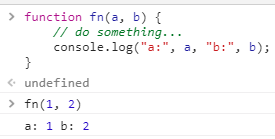

# [Javascript] Functional Programming 一文到底全紀錄
# Coding as function. Thinking as function
最近吹起了一股 Functional Programming (FP) 的風潮，什麼語言都想與 FP 嘎上一腳。不過，到底什麼是 FP 呢？以下這篇文章是我最近修習 Functional Programming 後的一點心得與筆記。
# # 緣起
就如 OOP (object oriented programming) 一般，Functional Programming 也是一種 Programming 的準則。
不同於 OOP 要求我們 「Think as real world, Think as Object.」 凡事以物件的角度思考、在程式中建立如同「真實世界」一般的互動；FP 則要求我們 「Everything think as function.」 以 Function 為中心的思考方式、以 Function 為最小單位的程式風格。
聽起來好像就是回到以前寫 C 語言的年代 。這對於每天寫多少程式、建構了多少 Function 的我們來說，有什麼難的？
其實，FP 中的 Function 跟我們一般程式所講的 Function 有些定義上的不同。它比較接近 數學意義上的 function 。
什麼意思？
以下我們先來講述一下的完整定義。
# # 定義
目前大家公認的 FP 定義至少要滿足以下幾點：
1. Function 必須作為一級公民。意即，Function 可以像一般變數一般被當作參數傳入、被當作結果輸出、被任意 assign 給其他變數、被任意進行運算。
2. Function 中只能有 Expression 而非指令 (instructions)。
3. Function 必須是 「Pure」 、 沒有 Side Effect 。
4. Function 「 不可改變 Input 的資料 」、「 不可 改變狀態 」。
5. Function 「可以任意『組合』得到新的 Function，且依然滿足以上這些守則」 。
# 一、Function 必須作為一級公民
在 JS 中，原本就將 Function 作為一級公民對待。Function 如同一般變數可以被任意傳入任意參數、被作為回傳值回傳。
例如：以下範例
將 function 儲存在變數中
將 function 作為結果回傳
# 二、Function 中只能有 Expression 而非指令 (instructions)。
在 FP 中， Function 只允許 純運算 。所有「被執行的指令」是不被允許的。然而對於真正在運行的專案，這其實並不容易被實踐 (例如呼叫 API 的部分 — I/O) ，儘管是已經將 Function 作為一級公民 的 JavaScript 而言也是一樣。
舉個 Function 中只有純運算的 例子：
var add = (a, b) => a + b
這個例子就是很典型的，在 function 只有運算式 「a + b」。
以下例子則非 Function 中只有純運算
這邊我們使用 reduce 來將 ary 中的元素集成起來，並且輸出為一個 object。
在這個例子中 reduce 內的 callback function ，就不是一個「只有純運算」的 function，因為其中有了 acc[ele.id] = ele 這段執行 assign 指令的 statement。
以上的程式碼我們若是要改成符合此規則的話，可以改寫成以下範例。
# 三、Function 必須是 Pure Function、沒有 Side Effect
什麼是 Pure Function？ Side Effect 又是什麼？
就是這個定義，使我認為 FP 對於 function 的定義更接近數學上的 function 。
在數學中，我們講述
y = f(x)就是一個 x 與 y 的對應關係。
x 經由 function f 之後產出 y、 x 與 y 一一對應，不論多少次、外在如何改變，只要 input 是 x，output 就一定是 y。
一個 Pure function 規範其中的 output Y 只與 input X 有關，不受外在的其他貓貓狗狗的參數或是雜七雜八的狀態影響。
就如同數學上 Domain 對應到 Co-domain 的過程。
這樣說太抽象了，我們來看看點例子：
我們假設有一個做「加減乘除工廠函數 (factory function) 」，因為某些原因，產生新的 function 時需要依靠一個 global 變數 outerVal 才能決定應該要產生哪個 function。那麼，這就 不是 一個 Pure function。
以下方的 Code 為例
當 outerVal = 0 時，一切都如註解那般正確執行。

然而，當 outerVal 不為零 時，這個 factory 就不再回傳原本的結果了。

這就是所謂的 Side Effect。
FP 要求 function 「無論何時何地，Output 都只與 Input 有關係」。
因此在這邊，此 Function 的「正確作法」是我們應該將 outerVal 也作為參數傳入，以顯式地表達此 Function 與 outerVal 也有關係 (FP 有一種叫做 Currying 的方法可以解決此問題，我們之後會講解)。
# 四、Function 「 不可改變 Input 的資料 」、「 不可 改變狀態 」
這個很好理解，簡單說就是 Function 不應該修改 input 的資料。
以 Javascript 原生的兩個 Method Array.splice 與 Array.slice 為例：
Array.splice 由於每 call 一次，便會修改原始 Array，因此並不符合 FP 的準則；而 Array.slice 無論 call 多少次，原始 Array 都不會被更動，因此符合 FP 的準則。
Array.splice 由於每 call 一次，便會修改原始 Array，因此並不符合 FP 的準則
Array.slice 無論 call 多少次，原始 Array 都不會被更動，因此符合 FP 的準則
# 五、Function 可以任意組合得到新的 Function，且依然滿足以上這些守則
這邊我們要回到數學中的「組合」(Compose)。
假設有兩個 function f(x) 與 g(x) 。我們可以任意將此兩個 function 組合起來成為一個新的 function f’(x) ，記做 f’ = f。g 。執行結果等效於 f(g(x)) 。
以程式上來說，可能會長成這樣
var compose = function(f, g) {
return function(x) {
return f(g(x));
};
};
其中，兩個 function 都以 x 作為 input。通過 compose 產生的新 function f’ 其執行結果等效於，將執行 function g 的結果作為 input 傳給 function f 。
我們舉個例：
假設有兩個 function 「Add2 (x)」與「Multiply3 (x)」
我們可以使用 compose 將兩個 function 組合成一個新的 function 「Add2ThenMultiply3」
如此，我們可以很輕鬆地利用 compose 產生新的 function，並且此 function 依然滿足以上所有 FP 準則。
# # Functional Programming 中常用的工具與技巧
花了大半個篇幅講解了何謂 Functional Programming，之後我想介紹一下 FP 常使用到的一些工具與技巧。
# Map
在 Javascript 中，我們有 Array.prototype.map ( ) 可以幫助我們將 Array 中的 element 依照 callback function 的規則 一一對應到新的 Array ，這有助於幫助我們輕鬆地將元素統一地「擴展」、「轉換」。
以下為一個簡單的例子：
將 Array 中的每個元素統一地 乘60 再加5，之後輸出為 ASCII Code
此作法會得到一個新的 Array [“A”, “}”, “¹”, “õ”, “ı”, “ŭ”, “Ʃ”, “ǥ”, “ȡ”] 並且，原始 Array ary 的內容並沒有因此被更動。
# Filter
Array.prototype.filter ( ) 是 Javascript 中原生支援的方法。與 Map 不同的地方是，它會依照 callback function 的規則 篩選符合條件的 element 並且蒐集成為一個新的 Array 。這很有用，我們可以利用 filter 很輕鬆的將符合條件的 Element 篩選出來，並且不影響到原始的 Array。
舉個簡單的例子
從 Array 中篩選出不是英文字母的 Element 作為 Output
# Reduce
Array.prototype.reduce ( ) 一樣是 Javascript 中原生支援的方法。這個方法與前兩個有著極大的區別。Reduce 接受兩個參數： 「 callback function 」 與 「 initial value 」。
Callback function 也會接收兩個參數 (*註1) ：「 previous result 」與「 current element 」。Callback function 會將前一輪處理的結果 (如果此輪是第一輪，則拿 Initial Value 作為此參數的值) 與目前的 element 處理完後，將結果作為下一輪 callback function，如此重複至輪巡完整個 Array。
這個 function 非常有用，當我們希望將 Array 經過一套邏輯收斂成一個值時，就可以使用 Reduce 完成。
註1:事實上 Reduce 的 function 可以接受 4 個參數：(previous result, current element, index, self array)。然而通常很少人會用到後面兩個參數，因此絕大多數時候忽略。
假設一個情境：
有 5組向量 [(1, 1), (2, 2), (3, 3), (4, 4), (5, 5)]
我們想計算出這五組向量的平均長度 ，則可以使用 Reduce 完成。
以程式碼來看就可以使用這一行表達。
# Pipe & Compose
Functional Programming 設計哲學之一便是： 「以 Function 為最小單位解決問題，任何 Function 都可以任意組合成為新的 Function」。
我們在上面講述 FP 觀念時，有大略提及過 Compose 的用法。
Compose 的用處為：將兩個以上的 function 組合，成為一個新的 function。
以上面的例子 f。g 來說，程式會先執行 g 並將 output 作為 f 的 input 執行。整個執行順序是「 由右向左 」的。
而 Pipe 則是很直觀地，先執行 f 並將 output 作為 g 的 input 執行。整個執行順序是「 由左向右 」的。
這兩個 Function 對 FP 的貢獻極大，但可惜的是 Javascript 本身並沒有支援，我們必須自己實作或是引用其他第三方套件 (ex. lodash 、 Ramda )。
如果不想引用第三方套件的朋友，本文也整理了一般性的 Pipe 與 Compose 。可以直接複製本文下方的兩行 code 到自己的專案使用。
/** | |
* pipe doing each functions and return the result. | |
* @param any | |
*/ | |
const pipe = (...fns) => x => fns.reduce((v, f) => f(v), x); | |
/** | |
* compose doing each functions from right to left and return the result. | |
* @param any | |
*/ | |
const compose = (...fns) => x => fns.reduceRight((v, f) => f(v), x); |
我們假設一個情境：
const ary = [
{id: 1, text: "a"}, {id: 2, text: "b"},
{id: 3, text: "c"}, {id: 4, text: "d"},
{id: 5, text: "e"}, {id: 6, text: "f"},
{id: 7, text: "g"}, {id: 8, text: "h"},
{id: 9, text: "i"}, {id: 10, text: "j"},
];
在此處我們可以把問題分析成如下
- 寫一個 function 將 array 中奇數 id 的 element 的 text 都轉為大寫，並且偶數 id 的 element 的 text 都內容重複
var toUperCaseInOddAndRepeateInEven = x => x.map(e => ({ ...e, text: e.id % 2 ? e.text.toUpperCase() : `${e.text}${e.text}` })) |
- 寫一個 function 將 array 中 3 的倍數 id 的 element 的 text 在前方加
“3”
var concat3 = x => x.map(e => e.id % 3 ? e : {...e, text: `3${e.text}`}) |
- 寫一個 function 將 array 中 非 5 的倍數 id 的 element 的 text 在後方加
“-5”
var concatM5InTail = x => x.map(e => e.id % 5 ? { ...e, text: `${e.text}-5` } : e) |
如此，我們有了這三個 function。我們將這三個 function 組合成一個新的 function 來完成我們的任務。
new_function = concatM5InTail。concat3。toUperCaseInOddAndRepeateInEven
const new_function = compose( | |
concatM5InTail, | |
concat3, | |
toUperCaseInOddAndRepeateInEven | |
); |
我們再利用剛剛新組合出的 function new_function 處理上面的 ary ，如此便達到了這個任務的要求了。
在這邊，可能會有些人有疑問：「我之前使用一個 loop 再加上幾個 condition 一樣可以達到效果，為啥要搞這麼多 function 來做這些事情？」
以 FP 處理問題有以下幾點好處：
- 以 function 為最小單位思考。
未來如果有新的需求時，我們可以使用手上有的 function 快速組合出能夠解決問題的 function，不用重新撰寫程式邏輯。
- 抽象出程式邏輯，使用「聲明式」而非「指令式」，增加程式碼的可讀性。
聲明式的程式風格清楚表示程式「要做什麼」而不需在乎「怎麼做」，讓人讀程式碼就像在讀文章一般清晰明瞭； 指令式 的程式風格，像一個暴露狂，強迫將你不想知道的一切資訊都展露給你，包括內部醜陋不堪的運算邏輯…。
- 不改變 Input 的資料，易於除錯與維護
由於每一個 Function 皆為 Pure function。如果程式有 Bug，我們僅需要定位到 Output 錯誤的環節，即可快速找出問題進行除錯。
# 柯里化 (Currying)
柯里化是一種「將接受多個參數的 function 轉換成一次只接受一個參數的 function」 的技術。擁有柯里化的 Function 可以藉由 將部分數值預先帶入 ， 回傳一個接收剩下數值的 function ，當所有數值條件皆備齊時，才真正執行此 function。
假設有一個 function fn 接受兩個參數 a, b 長成如下樣子

我們利用柯里化，可以將 function fn 變成一次只需要接收一個數值的 function
function curryFn(a) {
return function fn(b) {
// do something ...
console.log("a:", a, "b:", b);
}
}
被柯里化的 function 可以藉由傳遞部分參數，獲得一個 接受剩下參數 的新 function
在 FP 的世界中，我們期望每個 function 都可以任意的組合與複用，這意味著，function 最好能夠達到：
1. Input 參數數量與代表意義一致，方便 function 組合時的參數傳遞。
2. Point free 。function 不需要在乎 Input 值是誰，只需要專注在合成的運算過程。
我們可以舉一個簡單的例子：
創立一個 function 接收一個 input string 回傳一個 output string。
此 Output string 需要滿足以下幾個條件：
1. 單詞為大寫開頭者，置於最前方
2. 單詞為小寫開頭置於後方。
3. 開頭非字母者一律忽略。
4. 字母需依照其被處理的順序擺放。
Example:
Input 1: "hey You, Sort me Already!"
Output 1: "You, Sort Already! hey me"
我們可以先定義一些基礎的 function
// 以空格切分單詞 | |
const splitBySpace = s => s.split(' '); | |
// 判斷是否為大寫 | |
const isUpperCase = s => /[A-Z]/.test(s[0]); | |
// 判斷是否為小寫 | |
const isLowerCase = s => /[a-z]/.test(s[0]); | |
// 依照大小寫濾出合併成新的 array | |
const orderByCase = a => [...a.filter(isUpperCase), ...a.filter(isLowerCase)]; | |
// 組織成 Output String | |
const getOutputString = a => a.join(' '); |
然後將這些 function 合併成一個真正解決此問題的 function
const getOrderString = pipe( | |
splitBySpace, | |
orderByCase, | |
getOutputString | |
); | |
getOrderString("hey You, Sort me Already!"); // "You, Sort Already! hey me" | |
getOrderString("baby You and Me"); // "You Me baby and" |
3. 柯里化可以將狀態利用 Closure 保存起來。
一樣舉一個簡單的例子：
考慮一個亂數產生 Secret Key 的function
/* | |
* @desc 亂數產生密鑰 Token | |
* @param {string} charSet 產生密鑰所需的字元集合 | |
* @param {number} keyLength 密鑰的長度 | |
*/ | |
const randomSecretKey = (charSet, keyLength) => new Array(keyLength) | |
.fill('', 0, keyLength) | |
.map(ele => charSet[~~(Math.random() * charSet.length)]) | |
.join(''); |
通常我們產生密鑰時字元集合 (charSet) 都是固定不變的，因此我們可以使用柯里化將字元集合 (charSet) 保存起來，產生的新 function 只需要給定長度，即可產生相對應長度的密鑰。
// 柯里化 randomSecretKey function | |
const currySecretKey = curry(randomSecretKey); | |
// 傳入部分參數 charSet 產生新的 function : genSerectKey, 此 genSecretKey 接收剩下的參數: keyLength | |
const genSecretKey = currySecretKey("ABCDEFGHIJKLMNOPQRSTUVWXYZabcdefghijklmnopqrstuvwxyz0123456789!@#$%^&*"); | |
// 使用 genSecretKey 產生一個長度為 8 的密鑰 | |
console.log(genSecretKey(8)); // "dfdupnKD" | |
// 使用 genSecretKey 產生一個長度為 16 的密鑰 | |
console.log(genSecretKey(16)); // "GR24dz!Sgk512gMq" | |
// 使用 genSecretKey 產生一個長度為 32 的密鑰 | |
console.log(genSecretKey(32)); // "@*yg8EdvuHaRcxXm1QT3O1kzIMA2lzom" |
柯里化一樣在 Javascript 中本身並不支援，我們一樣必須自己實作或是引用其他第三方套件 (ex. lodash 、 Ramda )。
以下提供一個簡易的 Curry help function ，對 function 進行柯里化。
const curry = (fn, n) => { | |
const arity = n || fn.length; | |
return function curried(...args) { | |
return args.length >= arity | |
? fn.call(this, ...args) | |
: (...rest) => { | |
return curried.call(this, ...args, ...rest); | |
}; | |
}; | |
}; |
柯里化是 FP 中非常重要的一環。套句 《JS Functional Programming》 一書作者所述：「 有 些事物在你得到之前是無足輕重的，得到之後就不可或缺了。 」
# # 總結
Functional Programming 提供給我們不同於 OOP 的思路。兩者在程式撰寫時，各有擅長的部分，使用時並不衝突。
在某些情境下，使用 FP 可以讓我們的程式變得乾淨、清晰、易於維護，但是有時候 FP 反而會犧牲掉許多程式的執行效率。另外在 I/O 方面，也難以完全使用 FP 完成。
關於 FP ，我們應該視時機與場合使用。
重點是，學習 FP 提供給我們另一種解決問題的思考方式，但是不應因此限縮我們解決問題的方法。
# # 參考連結
- 前端工程研究：理解函式編程核心概念與如何進行 JavaScript 函式編程
- Pointfree 编程风格指南
- JS 函數式編程風格指南
- Favoring Curry
如果覺得這篇有幫到你的話，請不吝情給我點掌聲。